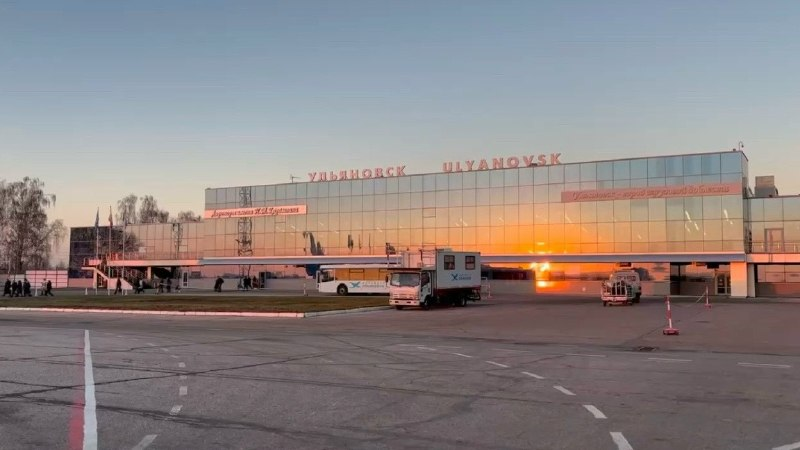

01
Политика и выборы · событие дня
На 12.00 20 сентября проголосовало уже более 55,24% жителей Ульяновской области. 🇷🇺 Сегодня третий и последний день голосования
Избирательные участки будут работать до 20.00.…
Избирательные участки будут работать до 20.00.…
Он созывал на молитву, предупреждал о беде, возвещал о празднике.…

Как отмечают многие наблюдатели, в этот раз на избирательных участках много молодежи. И этот правильно - во многом от этих молодых людей зависит будущее Ульяновской области.…
Власть в руках народа, сделай свой выбор.…

Согласно сведениям, поступившим от участковых избирательных участков, к 12:00 участие в голосовании на выборах губернатора Ульяновской области и депутатов Государственной Думы IX созыва приняли 506 807 избирателей Ульяновской области (55,24%).…


🇷🇺 Сегодня третий и последний день голосования. Избирательные участки будут работать до 20.00.…

На заседании штаба по комплексному развитию региона 14 сентября губернатору Алексею Русских доложили о реализации национального проекта «Экологическое благополучие».…

Избиратели активно приходят на свои участки: для одних это уже традиция, а для других — первый опыт.…

Особенно впечатляет пример 88-летней избирательницы: она приехала на участок на велосипеде, такой бодрости можно позавидовать!…


Ульяновцев приглашают на Никитинские чтения, посвящённые юбилею авиастроительного предприятия «Авиастар». Мероприятие состоится 22 сентября в 14:00 в Торжественном зале Дворца книги. Вход свободный.…
А Доска почета на центральной заводской площади была местом встреч и собраний: здесь каждый мог увидеть, кто заслужил признание коллектива.…


Соответствующие изменения в областной закон, регулирующий вопросы проведения капитального ремонта общего имущества в МКД, одобрили на заседании Правительства региона под руководством председателя Правительства Геннадия Спирчагова.…

Вот из-за таких скандальных пассажиров невозможно работать!»…
Большой дефект восстановили собственными тканями пациента — нетипичным для таких операций лоскутом, так как кровообращение в привычных зонах было нарушено.…
Главное из разбора урологов: Как отличить от радикулита: При колике невозможно найти «щадящую» позу, боль невыносима, человек мечется и часто испытывает тошноту.…


Министерство просвещения Российской Федерации направило в регионы методические рекомендации по организации преподавания физической культуры в 2026/27 учебном году.…

Старший тренер команды Владимир Корнилов отметил, что самым сложным соперником стала сборная Коми: в тай-брейке ульяновцы выиграли 21:19 и взяли матч со счётом 2:1.…
С 14 по 19 сентября в Уфе прошли Всероссийские соревнования общества «Динамо» по волейболу.…

В управлении МЧС России по Ульяновской области подвели итоги минувших суток.…

После перехода по ней деньги улетают скамерам.

Накануне в Вологде прошел заключительный день Всероссийских соревнований МЧС России «Памяти Героя Российской Федерации В.М.…

✔️ При оплате всей суммы сразу есть скидка Консультация юриста бесплатная!…

В цехе трудятся трое осуждённых. По словам сотрудников колонии, такая работа развивает усидчивость и внимание к деталям.…


Разрушения в области: В Софьино разрушено 6 квартир и горит склад; в Новых Котельниках горят три этажа многоэтажки; в Раменском эвакуировали 21-этажный дом (400 человек); в Орехово-Зуево сожжен частный дом.……


В Раменском дрон упал на 21-этажный дом — загорелась кровля, повреждены 20 машин.…


🎁 Забрать бесплатный доступ прямо сейчас по промокоду…

📃 Что установлено визуально: отходы находятся непосредственно на территории, имеются следы их складирования и работы техники.…

Ограничения коснутся части домов на сетях МУП «Теплоком» от ТЭЦ-1 и ТЭЦ-2. После проверок ГВС вернут в обычном режиме.…

От Гордора было выделено шесть грузовиков-многотонников. Огромная благодарность предпринимателям за предоставленную технику!…

Женщины выбирают самообслуживание чаще мужчин (59% против 51%).…


Её бабушка и мама также связали свою жизнь с лесным хозяйством. Семья посвятила развитию отрасли почти 70 лет.…

До конца сентября МБУ «Управление гражданской защиты» демонтирует самовольно установленные металлические столбики с цепочками рядом с домом №164 по улице Радищева, соответствующее постановление подписал глава города Александр Болдакин.…


Он созывал на молитву, предупреждал о беде, возвещал о празднике.…

| Тема | Завтра | Ожидание | Уверенность |
|---|---|---|---|
| Транспорт и дороги | ↓ спад | ~13.3 упоминаний | средняя |
| Выборы-2026 | ↑ рост | ~58.6 упоминаний | средняя |
| Суды и криминал | ↓ спад | ~15.8 упоминаний | средняя |
| Спорт | ↓ спад | ~2.8 упоминаний | средняя |
| Губернатор / власть | ↓ спад | ~20.9 упоминаний | средняя |
| Медицина | ↓ спад | ~3.7 упоминаний | средняя |